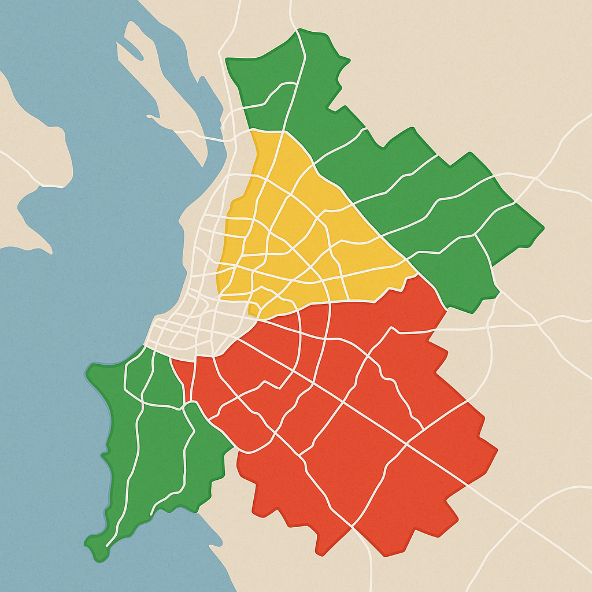

Enchentes: Informação que Salva Vidas
Monitoramento, alertas e colaboração para proteger comunidades brasileiras das enchentes.
Colabore com um ponto de alagamentoMapa de Zonas de Risco em Tempo Real
Áreas coloridas indicam risco de enchente. Clique para detalhes.
Receba Alertas Personalizados
- Alertas por WhatsApp, SMS ou notificações no app
- Baseados na sua localização validada
- Antecedência mínima de 24h para risco de enchente
Colabore: Registre Pontos de Alagamento
Ajude a mapear as áreas afetadas em tempo real. Seu registro será validado por outros usuários.
Registrar pontoGráficos Históricos do Nível da Água
Tecnologia a Serviço da Prevenção
- Monitoramento com inteligência artificial e sensores
- Imagens de satélite e sensoriamento remoto
- Big Data para rotas seguras e planejamento urbano
- Plataforma colaborativa e acessível